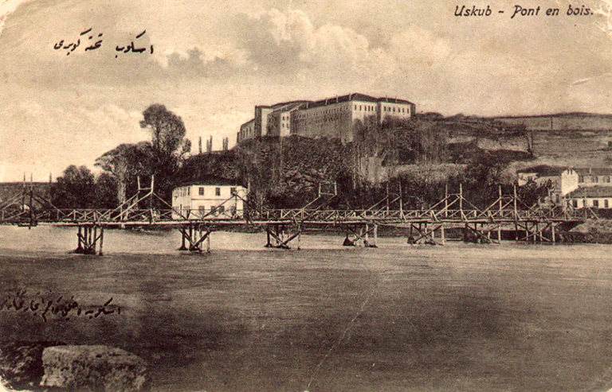
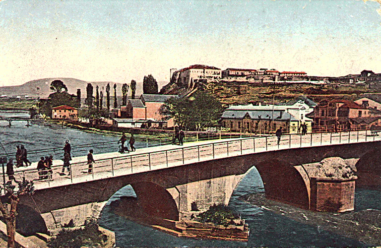
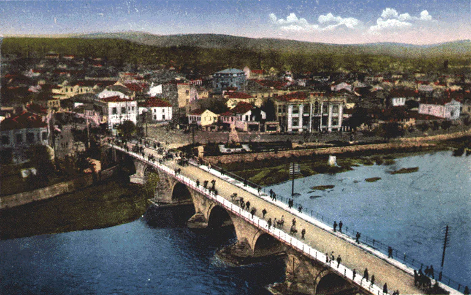
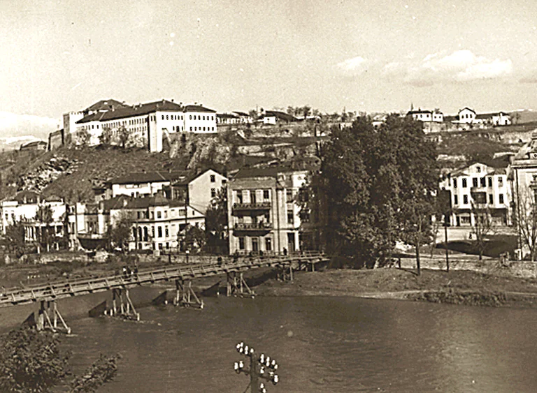
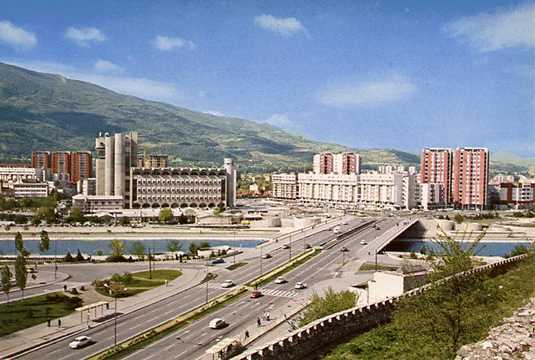

Скопље 1916 - 1917 мост
Документи из Балканских ратова
- Година
- 1916-1917
- Трајање
- 00:13

У центру града , на Вардару, изграђен је монументални камени мост (популарно назван Камени мост). Према неким турским изворима мост је изграђен у другој половини 15. века, за време владавине султана Мехмеда II. Према најновијим истраживањима из 1990. године, приликом реконструкције моста, претпоставља се да је мост изграђен у време Јустинијана I у 6. веку. Изграђен је од добро обрађених камених блокова, а његова конструкција ослања се на моћне стубове, међусобно повезане полукружним луковима - 13 на броју. 1905. године изграђене су бетонске стазе, које су пре тога биле покривене даскама. 1937. проширен је конзолама, на које су премештене пешачке стазе. На фотографији је Скопље - крај 19. века. Поглед на Камени мост и стари платан. Горе десно је скопска тврђава - Кале са касарном.

Камени мост - крај 19. века. У позадини лево види се Бурмали џамија.

Камени мост - крај 19. века. У позадини лево види се Бурмали џамија.

Скопље крајем 19. и почетком 20. века (лето) - поглед на Камени мост. У првом плану је телефонски стуб са поштанским сандучетом. Одмах поред њега је фењер, који представља први облик градске комуналне опреме. Пошто је лето, пешаци се штите од сунца сунцобранима. За превоз терета користила су се запрежна воловска кола, а фијакери су служили као јавно превозно средство грађана. Одмах поред моста десно види се један велики воденички точак.

Скопље крајем 19. и почетком 20. века (зими) - поглед на Камени мост. У првом плану је телефонски стуб са поштанским сандучетом. Одмах поред њих је фењер, који представља први облик градске комуналне опреме. Примећују се некалдрмисане блатњаве улице. У позадини су Јеврејска махала и скопска тврђава - Кале.

Панорама Каменог моста почетком 20. века.

Камени мост - око 1905. године. У позадини, горе лево, види се скопска тврђава - Кале са касарнама. Десно је стари платан.

Камени мост крајем 19. и почетком 20. века. Десно горе види се скопска тврђава - Кале.

Скопље у турском периоду - почетак 20. века. На фотографији се види да једна половина Каменог моста има камену ограду, а друга привремену ограду од гвожђа и дрвета. 1905. године започета је замена камене ограде гвозденом. Скопље у турском периоду - почетак 20. века. На фотографији се види да једна половина Каменог моста има камену ограду, а друга привремену ограду од гвожђа и дрвета. 1905. године започета је замена камене ограде гвозденом. У левом углу, иза Каменог моста, види се турско позориште. Одмах поред моста десно види се један велики воденички точак. Десно је стари платан на који је обешено мртво тело Карпоша, одмах после гушења Карпошевог устанка - 1689. године. У позадини у целини се види скопска тврђава - Кале и стамбени објекти у Јеврејској махали. Занимљиво је бељење платна које су жене вршиле у чистим водама Вардара - први план фотографије.

Група Турака на Каменом мосту - почетак 20. века. Занимљиво је приметити да су тротоари моста покривени даскама.

Железнички мост на Вардару у Скопљу - крај 19. века.

Камени мост на реци Пчињи - околина Скопља (данас не постоји). Према човеку који стоји на врху моста, висина моста је око 15 метара од површине воде. (1910-их)

Скопље 1902. године. На фотографији се види дрвени мост, а иза њега стара кафана „Богес“, у којој су се одржавале прве позоришне представе. Изнад ње је скопска тврђава - Кале са војном касарном.

Камени мост - 1905. година. Лево, иза њега, види се Турско позориште, а у горњем делу скопска тврђава - Кале.

Поглед ка десној обали Вардара кроз крошње старог платана - око 1910. године. Обухваћени су: део Каменог моста, Бурмали џамија и дућани испред Бурмали џамије.

Скопље пре 1912. године. Камени мост са конзолама и гвозденом оградом. Десно је стари платан, а горе се види скопска тврђава - Кале.

Скопље за време Балканског рата. У позадини Бурмали џамија.

Поглед са дела Каменог моста ка скопској тврђави - Кале (око 1910. године)

Поглед на део Каменог моста, а у позадини лево види се турско позориште. Изнад њега горе уздиже се скопска тврђава - Кале. (око 1910. године)

Камени мост са групом људи на њему - око 1913. године

Камени мост на Вардару у Скопљу - око 1913. године

Камени мост на Вардару у Скопљу - око 1913. године. У позадини, десно горе, види се скопска тврђава - Кале.

Скопље 1912. године - уметничка слика. Камени мост и Бурмали џамија. У позадини је прекрасан зелени појас топола. Примећује се интерполација класичне архитектуре. Нови кејски простори су нови урбани елемент. Групе стамбених, трговачких и занатских објеката испред моста у функцији су и саставни су део композиције, са традиционалним обележјима и елементима европских утицаја.

Гвоздени мост на Вардару у Скопљу са погледом ка старој школи, Св. Мини и Св. Богородици - око 1920. године.

Гвоздени мост изграђен 1905. године. У позадини је зграда првог Скопског универзитета. (1915. година)

Гвоздени мост изграђен 1905. године. У позадини је зграда првог Скопског универзитета. (1920-их.)

Гвоздени мост на Вардару у Скопљу, изграђен 1905. године. У позадини је зграда првог скопског универзитета. (1920-их)

Гвоздени мост изграђен 1905. године. (1920-их)

Гвоздени мост на Вардару у Скопљу са погледом на објекте на кеју „Димитар Влахов“. (1920-их)

Скопље, око 1920. год. Део градског трга испред Каменог моста. Први киосци за успутни сервис и продају. Киосци имају наглашену архитектуру у детаљима, тј. у обликовању кровова. Мост је проширен пешачким конзолама. У позадини горе види се скопска тврђава - Кале.

Скопље, око 1920. год. Део градског трга испред Каменог моста. Испред и на Каменом мосту примећују се мале грађевине за обавештавање грађана путем плаката. Мост је проширен пешачким конзолама. У позадини, горе лево, види се скопска тврђава - Кале.

Камени мост са групом људи који посматрају повећани ниво воде у Вардару. (1920-их)

Камени мост - 1920. година. У позадини се види Отоманска банка.

Поглед са Каменог моста ка Старом граду и Пајко махали са ординацијом зубара др Рубенса и Отоманском банком - око 1927. године.

Поглед са Каменог моста ка Старом граду, чаршији и брегу Гази Баба. Одмах поред моста са десне стране налазила се ординација зубара др Рубенса. Мало десније је објекат Отоманске банке. Између њих био је мали трг на коме је било стајалиште фијакера. А у средини трга био је споменик палим борцима у Балканском рату - око 1927. године.

Поглед са Каменог моста ка Старом граду, чаршији и брегу Гази Баба. Одмах поред моста са десне стране налазила се ординација зубара др Рубенса. Мало десније је објекат Отоманске банке. Између њих био је мали трг на коме је било стајалиште фијакера. А у средини трга био је споменик палим борцима - око 1927. године.

Поглед са Каменог моста ка Старом граду и Пајко махали са ординацијом зубара др Рубена и Отоманском банком - око 1927. године.

Поглед ка десној обали Вардара са делом моста и Официрским домом - 1930-их. На левој страни види се остатак посеченог старог платана на који је 1689. године, после гушења устанка, обешено мртво тело Карпоша.

Поглед на део Каменог моста, стари платан и скопску тврђаву - Кале - око 1920. године.

Скопље, око 1920. год. Камени мост са скопском тврђавом - Кале у позадини. У првом плану бељење платна у чистој води Вардара.

Поглед на мали дрвени мост и кеј на десној обали Вардара. Објекти имају неокласичне и барокне детаље у архитектонском изразу. Улица је данашња „Илинденска“. У низу објеката је и Средња музичка школа. У првом плану је мали дрвени мост преко кога се долазило до Народног позоришта.

Мали дрвени мост на Вардару, са Официрским домом у позадини. Поред њега су објекти банке и старе поште - крај 1920-их.

Поглед на мали дрвени мост на Вардару, а у позадини се виде Официрски дом, стара пошта и банка - око 1930. године.

Поглед ка скопској тврђави - Кале са касарном. Испод ње налази се јеврејска махала. У првом плану је мали дрвени мост - 1950-их.

Поглед ка Народном позоришту и малом дрвеном мосту - 1930-их.

Камени мост - 1930-их. Народно позориште у позадини, а изнад њега скопска тврђава - Кале.

Поглед на део трга и Камени мост. У позадини, лево, види се Народно позориште и скопска тврђава - Кале. Упадљив је фијакер као главно превозно средство грађана. У првом плану срушени објекти за изградњу Народне банке - око 1930. године.

Надошла вода Вардара. Мост је до половине прекривен водом. Фотографија је снимљена са десне ка левој обали - 1930-их.

Реконструкција и промена калдрме Каменог моста. Поглед на Ристићеву палату и прве киоске - око 1930-их.

Поглед са Каменог моста ка тргу. Лево је рашчишћавање простора за изградњу Народне банке - 1930-их.

Поглед са леве обале Вардара ка Каменом мосту и Официрском дому - 1930-их.

Камени мост на Вардару - око 1930. године. У позадини се види Народно позориште, а десно горе скопска тврђава - Кале.

Камени мост - 1950-их.

Део Каменог моста. У позадини се види хотел „Гранд“. - 1960-их

Камени мост са скопском тврђавом - Кале 1960-их, пре уређења кејског простора.

Поглед на Камени мост и скопску тврђаву - Кале. (1970-их)

Камени мост 1970-их са средњим кејским простором.

Камени мост и трг 1970-их.

Поглед са десне ка левој обали Вардара, ка Каменом мосту, делу трга и новој пошти у позадини. (1970-их)

Данашњи мост „Гоце Делчев“, фотографисан са скопске тврђаве - Кале. (1990-их)

Документи из Балканских ратова
 Аквадукт4 разгледнице
Аквадукт4 разгледнице Кале30 разгледница
Кале30 разгледница Мостови60 разгледница
Мостови60 разгледница Кеј58 разгледница
Кеј58 разгледница Трг46 разгледница
Трг46 разгледница Објекти66 разгледница
Објекти66 разгледница Хришћански храмови19 разгледница
Хришћански храмови19 разгледница Муслимански објекти33 разгледнице
Муслимански објекти33 разгледнице Официрски дом29 разгледница
Официрски дом29 разгледница Позориште28 разгледница
Позориште28 разгледница Железничка станица13 разгледница
Железничка станица13 разгледница Школе36 разгледница
Школе36 разгледница Паркови12 разгледница
Паркови12 разгледница Пијаце18 разгледница
Пијаце18 разгледница Улице38 разгледница
Улице38 разгледница Панорама I60 разгледница
Панорама I60 разгледница Панорама II30 разгледница
Панорама II30 разгледница Колажи55 разгледница
Колажи55 разгледница Поплаве9 разгледница
Поплаве9 разгледница Земљотрес27 разгледница
Земљотрес27 разгледница Скопље 200026 разгледница
Скопље 200026 разгледница